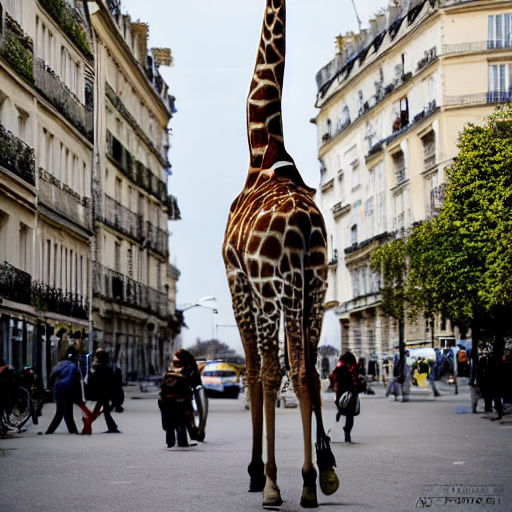

StableDiffusion.pred_noise?Signature: StableDiffusion.pred_noise(self, prompt_embedding, l, t, guidance_scale)
Docstring: <no docstring>
File: ~/Desktop/SlowAI/nbs/slowai/overview.py
Type: functionNegative prompts are an extension of the Classifier Free Guidance Module. Recall this is part of the pred_noise method of StableDiffusion
Signature: StableDiffusion.pred_noise(self, prompt_embedding, l, t, guidance_scale)
Docstring: <no docstring>
File: ~/Desktop/SlowAI/nbs/slowai/overview.py
Type: functionLet’s define a helper method to load StableDiffusion, as in the “Overview” notebook
get_stable_diffusion (cls=<class 'slowai.overview.StableDiffusion'>)
get_simple_pipe ()
0%| | 0/30 [00:00<?, ?it/s]100%|██████████| 30/30 [00:04<00:00, 7.38it/s]
prompt_embedding is a tensor four-rank tensor of batch_size x seq_len x channels, where the batch size is 2 because its the concatenated unconditional prompt and the conditional prompt.
We want to add the negative prompt and run this through the denoising unet at the same time. This should make the batch size into 3.
StableDiffusionWithNegativePromptA (tokenizer:transformers.models.clip.t okenization_clip.CLIPTokenizer, text_ encoder:transformers.models.clip.mode ling_clip.CLIPTextModel, scheduler:Any, unet:diffusers.models. unet_2d_condition.UNet2DConditionMode l, vae:diffusers.models.autoencoders. autoencoder_kl.AutoencoderKL)
sd = get_stable_diffusion(StableDiffusionWithNegativePromptA)
embedding = sd.embed_prompt("a photo of a giraffe in paris", "blurry")
embedding.shapetorch.Size([3, 77, 768])Now, we need to pretty much totally rewrite the denoising method to incorporate this negative guidance.
StableDiffusionWithNegativePromptB (tokenizer:transformers.models.clip.t okenization_clip.CLIPTokenizer, text_ encoder:transformers.models.clip.mode ling_clip.CLIPTextModel, scheduler:Any, unet:diffusers.models. unet_2d_condition.UNet2DConditionMode l, vae:diffusers.models.autoencoders. autoencoder_kl.AutoencoderKL)
sd = get_stable_diffusion(StableDiffusionWithNegativePromptB)
embedding = sd.embed_prompt("a photo of a giraffe in paris", "blurry")
l = sd.init_latents()
epsilon = sd.pred_noise(embedding, l, t=0, guidance_scale_pos=7.5, guidance_scale_neg=2)
epsilon.shapetorch.Size([1, 4, 64, 64])Finally, we incorporate the negative prompt into the class API.
StableDiffusionWithNegativePromptC (tokenizer:transformers.models.clip.t okenization_clip.CLIPTokenizer, text_ encoder:transformers.models.clip.mode ling_clip.CLIPTextModel, scheduler:Any, unet:diffusers.models. unet_2d_condition.UNet2DConditionMode l, vae:diffusers.models.autoencoders. autoencoder_kl.AutoencoderKL)